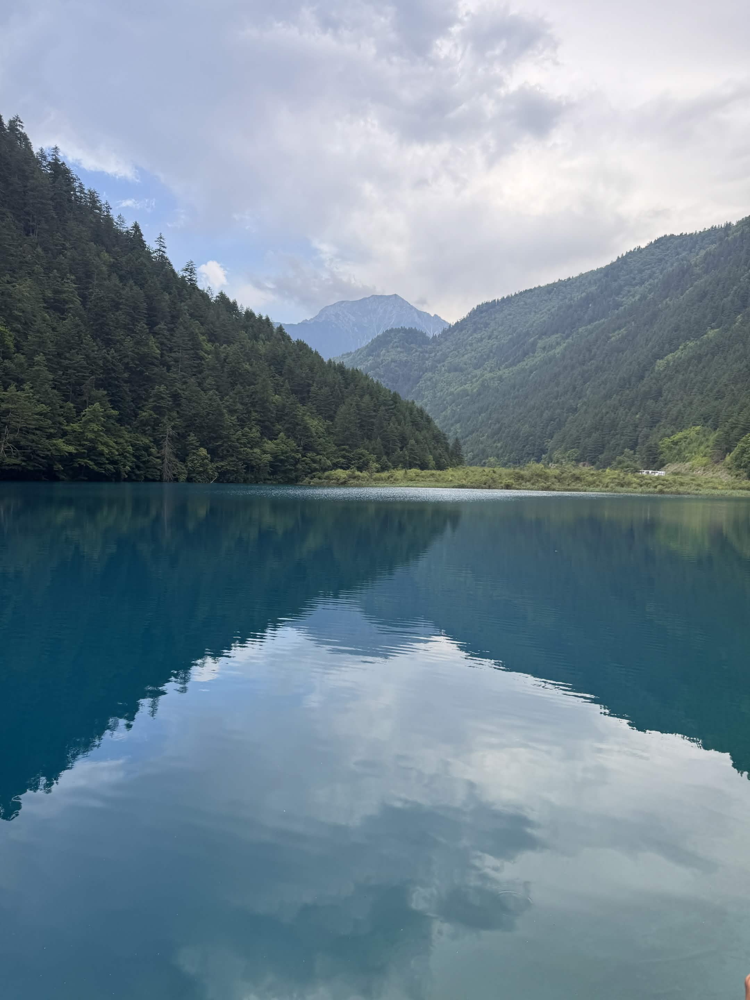
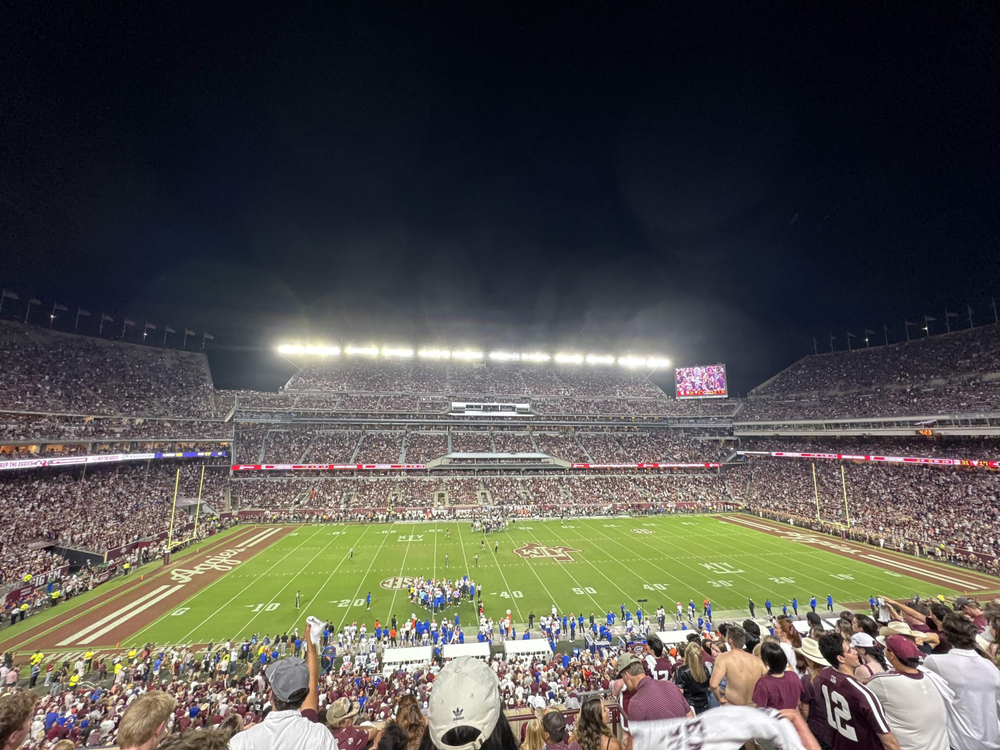

Traveling

Traveling is one of my favorite activities and I value it a lot. Given the
privilege to travel around the world, I am always interested in exploring
different cultures, either by reading the history of the place in museums or by
trying out local food. Getting to see different regions of the world also opens
up my mind, and it can give me inspirations on certain projects.
In the past few years, I have traveled to countries and regions like China, Japan,
Taiwan, Hong Kong, Singapore, and more. Experiencing local life and their unique culture
is something special and inspirational.
Sports

Sports is also a big part of life. I like to watch all different kinds of sports,
including but not limited to soccer, baseball, american football, and table tennis.
I have attended sport events in person, and the vibes in the stadium were very
attrative. Cheering for your home team in real life is something that I describe as
"Blood boiling with Excitement". The passion for sports eventually got me a part-time
at MLB China.
On the other hand, I also play a lot of sports, even though I don't master them. It is
fun to spend time playing sports with friends, and working out also gives me a chance
to live a healthier and better life, so it balances out with all the time spent sitting
in front of a monitor.
Reading
Reading is a way of meditation. I found out that reading makes my mind calm and time always passed faster. Although most people enjoy reading books, I am more into reading online novels. The refreshing and diverse topics always opened my mind, and sometimes inspired me with some coding ideas. Given the 1600 hours I spent on a reading app, reading is a good exercise to practice.
Video Editor

By the end of High School, I had worked for a company where my job is to edit the raw videos and make them into condensed cuts of the original video. Sometimes, there would be recorded live streams, and our mission is to figure out the key information and edit them into highlights.